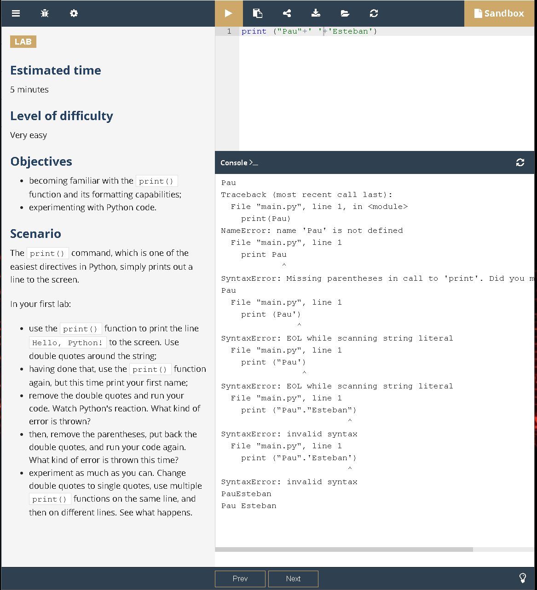
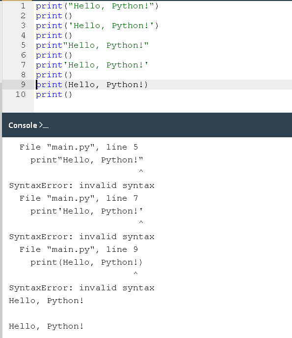
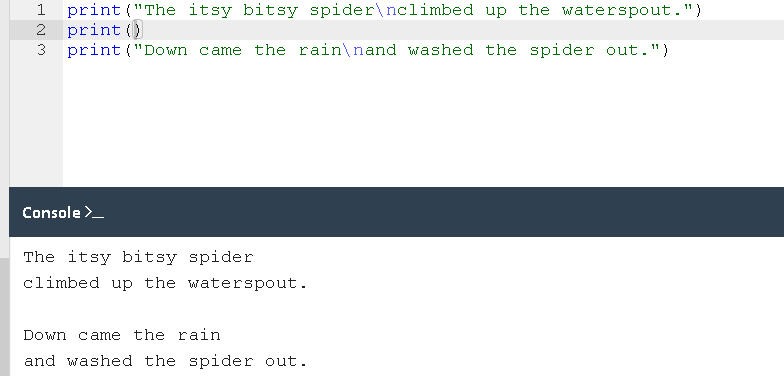
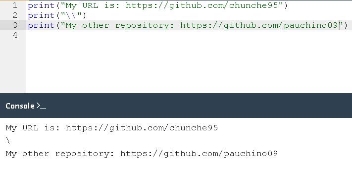
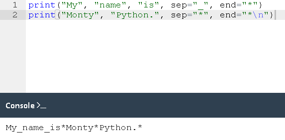
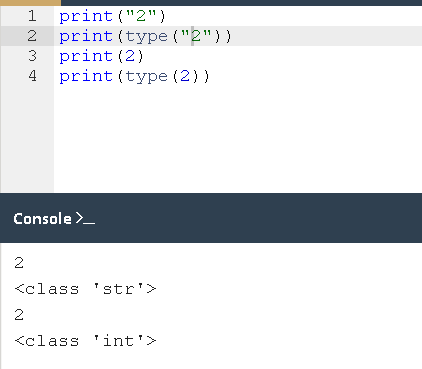

Start Python
To start Python on Windows computer, open a command line window and type python...
How does a computer program work?
This course aims to show you what the Python language is and what it is used for. Let's start from the absolute basics. A program makes a computer usable. Without a program, a computer, even the most powerful one, is nothing more than an object. Similarly, without a player, a piano is nothing more than a wooden box. Computers are able to perform very complex tasks, but this ability is not innate. A computer's nature is quite different. It can execute only extremely simple operations, e.g., a computer cannot evaluate the value of a complicated mathematical function by itself, although this isn't beyond the realms of possibility in the near future. Contemporary computers can only evaluate the results of very fundamental operations, like adding or dividing, but they can do it very fast, and can repeat these actions virtually any number of times. Imagine that you want to know the average speed you've reached during a long journey. You know the distance, you know the time, you need the speed. A computer screen with Python logo. Naturally, the computer will be able to compute this, but the computer is not aware of such things as distance, speed or time. Therefore, it is necessary to instruct the computer to:
- accept a number representing the distance
- accept a number representing the travel time
- divide the format value by the latter and store the result in the memory
- display the result (representing the average speed) in a readable format
Natural languages vs programming languages
A language is a means (and a tool) for expressing and recording thoughts. There are many languages all around us. Some of them require neither speaking nor writing, such as body language; it's possible to express your deepest feelings very precisely without saying a word.
Another language you use each day is your mother tongue, which you use to manifest your will and to think about reality. Computers have their own language, too, called machine language, which is very rudimentary.
A computer, even the most technically sophisticated, is devoid of even a trace of intelligence. You could say that it is like a well-trained dog - it responds only to a predetermined set of known commands.
The commands it recognizes are very simple. We can imagine that the computer responds to orders like "take that number, divide by another and save the result".
A complete set of known commands is called an instruction list, sometimes abbreviated to IL. Different types of computers may vary depending on the size of their ILs, and the instructions could be completely different in different models.
Note: machine languages are developed by humans.
No computer is currently capable of creating a new language. However, that may change soon. On the other hand, people use a number of very different languages, too, but these languages developed naturally. Moreover, they are still evolving.
New words are created every day and old words disappear. These languages are called natural languages.
What makes a language?
We can say that each language (machine or natural, it doesn't matter) consists of the following elements:
An alphabet
A set of symbols used to build words of a certain language (e.g. the Latin alphabet for English, the Cyrilic alphabet for Russian, Kanji for Japanese, and so on)
A Lexis
(aka a dictionary) a set of words the language offers its users (e.g. The word "computer" comes from the English language dictionary, while "cmoptrue" doesn't; the word "chat" is present both in English and Frech dictionaries, but their meanings are different)
A syntax
A set of rules (formal or informal, written or felt intuitively) used to determine if a certain string of words forms a valid sentece (e.g. "I am a python" is a syntactically correct phrase, while "I a python am" isn't)
Semantics
A set of rules determining if a certain phrase makes sense (e.g. "I ate a doughnut " makes sense, but "A doughnut ate me" doesn`t)
The IL is, in fact, the aplhabet of a machine language. This is the simplest and most primary set of symbols we can use to give commands to a computer. It's the computer's mother tongue.Unfortunately, this tongue is a cry from a human mother lntgue. We all (both computer and humans) need something alse, a common language for computers and humans or a bridge between the two different worlds.
We need a language in which humans can write their programs and a language that computers may use to execute the programs, one that is far more complex than machine language and yet far simpler than natural language.
Such languages are often called high-level programming languages. They are least somewhat similar to natural ones in that they use symbols, words and conventions readable to humans. These languages enable humans to express commands to computers that are much more complex than those offered by ILs.
A program written in a high-level programming languages is called a source code (in contrast to the machine code executed by computers). Similarly, the file containing the source code is called the source file.
Compilation vs interpretation
Computer programming is the act of composing the selected programming language's elemets in the order that will cause the desired effect. The effect could be different in every specific case - it's up to the programmer's imagination, knowledge and experience.
Of course, such a composition has to be correct in many senses:
- Alphabetically - a program needs to be written in a recognizable script, such as Roman, Cyrillic, etc.
- Lexically - each programming language has its dictionary and you need to master it; thankfully, it's much simpler and smaller than the dictionary of any natural language.
- Syntactically - each language has its rules and they must be obeyed.
- Semantically - the program has to make sense.
Let's assume that you're sucessful written a program. How do we persuade the computer to execute it? You have to render your program into machine language. Luckily, the translation can be done by a computer itself, making the whole process fast and efficient.
There are two different ways of transforming a program from a high-level programming language into machine language:
- Compilation- the source program is translated once (however, this act must be repeated each time you modify the source code) by getting a file (e.g., an .exe file if the code is intended to be run under MS Windows) containing the machine code; now you can distribute the file worldwide; the program that performs this translation is called a compiler or translator.
- Interpretation- you (or any user of the code) can translate the source program each time it has to be run; the program performing this kind of transformation is called an interpreter, as it interprets the code every time it is intended to be executed; it also means that you cannot just distribute the source code as-is, because the end-user also needs the interpreter to execute it.
There are few languages that can be both compiled and interpreted. Usually, a programming language is projected with this factor in its constructors minds- will it be compiled or interpreted?
What does the interpreter actually do?
Let's assume once more that you have written a program. Now, it exists as a computer file: a computer program is actually a piece of text, so the source code is usually placed in text files.
Note: it has to be pure text, without any decorations like different fonts, colors, embedded images or other media. Now you have to invoke the interpreter and let it read your source file.
The interpreter reads the source code in a way that is common in Western culture: from top to bottom and from left to right. There are some exceptions - they'll be covered later in the course.
First of all, the interpreter checks if all subsequent lines are correct (using the four aspects covered earlier).
If the compiler finds an error, it finishes its work immediately. The only result in this case is an error message. The interpreter will inform you where the error is located and what caused it. However, these messages may be misleading, as the interpreter isn't able to follow your exact intentions, and may detect errors at some distance from their real causes.
For example, if you try to use an entity of an unknown name, it will cause an error, but the error will be discovered in the place where it tries to use the entity, not where the new entity's name was introduced.
In other words, the actual reason is usually located a little earlier in the code, e.g., in the place where you had to inform the interpreter that you were going to use the entity of the name.
If the line looks good, the interpreter tries to execute it (note: each line is usually executed separately, so the trio "read-check-execute" can be repeated many times - more times than the actual number of lines in the source file, as some parts of the code may be executed more than once).
It is also possible that a significant part of the code may be executed successfully before the interpreter finds an error. This is normal behavior in this execution model.
You may ask now: which is better? The "compiling" model or the "interpreting" model? There is no obvious answer. If there had been, one of these models would have ceased to exist a long time ago. Both of them have their advantages and their disadvantages.
| Compilation | Interpretation | |
| Advantages | The executation of the traslated code is usally faster, only the user has to have the compiler - the end - user may use the code without it. The traslated code is stored using machine language - as it is very hard to understand it, your own investions and programming tricks are likely to remain your secret. | You can run the code as soon as you complete it - there are no additional phases of translation, the code is stored using programming language, not the machine one - this means that ir can be run on computers using different machine languages, you don't compile your code separately for each different architecture. |
| Disadvantages | The compilation itself may be a very time-consuming process - you may not be able to run your code immediately after any amendment, you have to have as many compilers as hardware platforms you want your code to be run on. | don't expect that interpretation will ramp your code to high speed - your code will share the computer's power with the interpreter, so it can't be really fast, both you and the end user have to have the interpreter to run your code. |
What is Python?
Python is a widely-used, interpreted, object-oriented, and high-level programming language with dynamic semantics, used for general-purpose programming.
And while you may know the python as a large snake, the name of the Python programming language comes from an old BBC television comedy sketch series called Monty Python's Flying Circus.
At the height of its success, the Monty Python team were performing their sketches to live audiences across the world, including at the Hollywood Bowl.
Since Monty Python is considered one of the two fundamental nutrients to a programmer (the other being pizza), Python's creator named the language in honor of the TV show.
Who created Python?
One of the amazing features of Python is the fact that it is actually one person's work. Usually, new programming languages are developed and published by large companies employing lots of professionals, and due to copyright rules, it is very hard to name any of the people involved in the project. Python is an exception.
There are not many languages whose authors are known by name. Python was created by Guido van Rossum, born in 1956 in Haarlem, the Netherlands. Of course, Guido van Rossum did not develop and evolve all the Python components himself.
The speed with which Python has spread around the world is a result of the continuous work of thousands (very often anonymous) programmers, testers, users (many of them aren't IT specialists) and enthusiasts, but it must be said that the very first idea (the seed from which Python sprouted) came to one head - Guido's.
Python goals
In 1999, Guido van Rossum defined his goals for Python:
- An easy and intuitive language just as powerful as those of the major competitors;
- Open source, so anyone can contribute to its development;
- Code that is as understandable as plain English;
- Suitable for everyday tasks, allowing for short development times.
Either way, it still occupies a high rank in the top ten of the PYPL PopularitY of Programming Language and the TIOBE Programming Community Index.
Python isn't a young language. It is mature and trustworthy. It's not a one-hit wonder. It's a bright star in the programming firmament, and time spent learning Python is a very good investment.
What makes Python special?
How does it happen that programmers, young and old, experienced and novice, want to use it? How did it happen that large companies adopted Python and implemented their flagship products using it?
There are many reasons - we've listed some of them already, but let's enumerate them again in a more practical manner:
- It's easy to learn - the time needed to learn Python is shorter than for many other languages; this means that it's possible to start the actual programming faster.
- It's easy to teach - the teaching workload is smaller than that needed by other languages; this means that the teacher can put more emphasis on general (language-independent) programming techniques, not wasting energy on exotic tricks, strange exceptions and incomprehensible rules.
- It's easy to use for writing new software - it's often possible to write code faster when using Python
- It is easy to understand - it's also often easier to understand someone else's code faster if it is written in Python
- It's easy to obtan, install and deploy - Python is free, open and multiplatform; not all languages can boast that.
It's not a speed demon - Python does not deliver exceptional performance, in some cases it may be resistant to some simpler testing techniques - this may mean that debugging Python's code can be more difficult than with other languages; fortunately, making mistakes is always harder in Python.
It should also be stated that Python is not the only solution of its kind available on the IT market.
It has lots of followers, but there are many who prefer other languages and don't even consider Python for their projects.
Python rivals?
Python has two direct competitors, with comparable properties and predispositions. These are:
- Perl- a scripting languages originally authored by Larry Wall
- Ruby- a scripting language originally authored by Yukihiro Matsumoto
In contrast, the latter is more innovative and more full of fresh ideas than Python. Python itself lies somewhere between these two creations.
The Internet is full of forums with infinite discussions on the superiority of one of these three over the others, should you wish to learn more about each of them.
Where can we see Python in action?
We see it every day and almost everywhere. It's used extensively to implement complex Internet services like search engines, cloud storage and tools, social media and so on. Whenever you use any of these services, you are actually very close to Python, although you wouldn't know it.
Many developing tools are implemented in Python. More and more everyday use applications are being written in Python. Lots of scientists have abandoned expensive proprietary tools and switched to Python. Lots of IT project testers have started using Python to carry out repeatable test procedures. The list is long.
Why not Python?
Despite Python's growing popularity, these are still some niches where Python is absent, or is rarely seen:
- low-level programmming (sometimes called "close to metal" programming) If you want to implement an extremely effective driver or graphical engine, you wouldn't use Python.
- Appplication for mobile devices although this territory is still waiting to be conquered by Python, it will most likely happen someday.
There is more Python
There are two main kinds of Python, called Python 2 and Python 3.
Python 2 is an older version of the original Python. Its development has since been intentionally stalled, although that doesn't mean that there are no updates to it. On the contrary, the updates are issued on a regular basis, but they are not intended to modify the language in any significant way.
They rather fix any freshly discovered bugs and security holes.
Python 2's development path has reached a dead end already, but Python 2 itself is still very much alive.
Python 3 is the newer ( to be precise, the current) version of the language. It's going through its own evolution path, creating its own standars and habits.
The former is more traditional, more conservative than Python, and resembles some of the good old languages derived from the classic C programming language.
These two versions of Python aren't compatible with each other. Python 2 scripts won't run in a Python 3 environment and vice versa, so if you want the old Python 2 code to be run by a Python 3 interpreter, the only possible solution is to rewrite it, not from scratch, of course,
as large parts of the code may remain untouched, but you do have to revise all the code to find all possible incompatibilities. Unfortunately, this process cannot be fully automatized.
It's too hard, too time-consuming, too expensive, and too risky to migrate an old Python 2 application to a new platform. It's possible that rewriting the code will introduce new bugs to it. It's easier and more sensible to leave these systems alone and to improve the existing
interpreter, instead of trying to work inside the already functioning source code.
Python 3 isn't just a better version of Python 2 - it is a completely different language, although it's very similar to its predecessor. When you look at them from a distance, they appear to be the same, but when you look closely, though, you notice a lot of differences.
If you're modifying an old existing Python solution, then it's highly likely that it was coded in Python 2. This is the reason why Python 2 is still in use. There are too many existing Python 2 applications to discard it altogether.
Note If you're going to start a new Python project, you should use Python 3, and this is the version of Python that will be used during this course.
It is important to remember that there may be smaller or bigger differences between subsequent Python 3 releases (e.g., Python 3.6 introduced ordered dictionary keys by default under the CPython implementation) - the good news, though, is that all the newer versions of Python 3
are backwards compatible with the previous versions of Python 3. Whenever meaningful and important, we will always try to highlight those differences in the course.
All the code samples you will find during the course have been tested against Python 3.4, Python 3.6, and Python 3.7.
Python aka CPython
In addition to Python 2 and Python 3, there is more than one version of each.
First of all, there are the Pythons which are maintained by the people gathered around the PSF (Python Software Foundation), a community that aims to develop, improve, expand, and popularize Python and its environment. The PSF's president is Guido von Rossum himself, and for this reason, these Pythons are called canonical.
They are also considered to be reference Pythons, as any other implementation of the language should follow all standards established by the PSF.
Guido van Rossum used the "C" programming language to implement the very first version of his language and this decision is still in force. All Pythons coming from the PSF are written in the "C" language. There are many reasons for this approach and it has many consequences.
One of them (probably the most important) is that thanks to it, Python may be easily ported and migrated to all platforms with the ability to compile and run "C" language programs (virtually all platforms have this feature, which opens up many expansion opportunities for Python).
This is why the PSF implementation is often referred to as CPython. This is the most influential Python among all the Pythons in the world.
Cython
Another Python family member is Cython.
Cython is one of a possible number of solutions to the most painful of Python's trait - the lack of efficiency. Large and complex mathematical calculations may be easily coded in Python (much easier than in "C" or any other traditional language), but the resulting code's execution may be extremely time-consuming.
How are these two contradictions reconciled? One solution is to write your mathematical ideas using Python, and when you're absolutely sure that your code is correct and produces valid results, you can translate it into "C". Certainly, "C" will run much faster than pure Python.
This is what Cython is intended to do - to automatically translate the Python code (clean and clear, but not too swift) into "C" code (complicated and talkative, but agile).
Jython
Another version of Python is called Jython.
"J" is for "Java". Imagine a Python written in Java instead of C. This is useful, for example, if you develop large and complex systems written entirely in Java and want to add some Python flexibility to them. The traditional CPython may be difficult to integrate into such an environment, as C and Java live in completely different worlds and don't share many common ideas.
Jython can communicate with existing Java infrastructure more effectively. This is why some projects find it usable and needful.
Note: the current Jython implementation follows Python 2 standards. There is no Jython conforming to Python 3, so far.
PyPy and RPython
Take a look at the logo below. It's a rebus. Can you solve it?
It's a logo of the PyPy - a Python within a Python. In other words, it represents a Python environment written in Python-like language named RPython (Restricted Python). It is actually a subset of Python. The source code of PyPy is not run in the interpretation manner, but is instead translated into the C programming language and then executed separately.
This is useful because if you want to test any new feature that may be (but doesn't have to be) introduced into mainstream Python implementation, it's easier to check it with PyPy than with CPython. This is why PyPy is rather a tool for people developing Python than for the rest of the users.This doesn't make PyPy any less important or less serious than CPython, of course.
In addition, PyPy is compatible with the Python 3 language.
There are many more different Pythons in the world. You'll find them if you look, but this course will focus on CPython.
How to get Python and how to get use it
There are several ways to get your own copy of Python 3, depending on the operating system you use.
Linux users most probably have Python already installed - this is the most likely scenario, as Python's infrastructure is intensively used by many Linux OS components.
For example, some distributors may couple their specific tools together with the system and many of these tools, like package managers, are often written in Python. Some parts of graphical environments available in the Linux world may use Python, too.
If you're a Linux user, open the terminal/console, and type:
python3
At the shell prompt, press Enter and wait.
Then you don't have to do anything else.
If Python 3 is absent, then refert to your Linux documentation in orfer to find how to use your packege manager to download and install a new package - the one need is named python3 or its name negins with that. All non-Linux users can dowload a coy at
Home page Python
Starting your work with Python
Now that you have Python 3 installed, it's time to check if it works and make the very first use of it.
This will be a very simple procedure, but it should be enough to convince you that the Python environment is complete and functional.
There are many ways of utilizing Python, especially if you're going to be a Python developer.
To start your work, you need the following tools:
- An editor wich will support you in writing the code (it should have some special features, not available in simple tools), this dedicated will editor will give you more than the standard OS equipment.
- A console in wich you can launch your newly written code and stop it forcibly when it gets out of control.
- A tool named debugger, able to launch your code step by step and allowing you to inspect it at each moment of execution.
IDLE is an acronym: Integrated Development and Learning Enviromnment.
Navigate through your OS menus, find IDLE somewhere under Python 3.x and launch it. This is what you should see:

How to write and run your very first program
It is now time to write and run your first Python 3 program. It will be very simple, for now.
The first step is to create a new source file and fill it with code. Click File in the IDLE’s menu and choose New file. As you can see, IDLE opens a new window for you. You can use it to write and amend your code.
This is the editor window. Its only purpose is to be a workplace in which your source code is treated. Do not confuse the editor window with the shell window. They perform different functions.

Click File (in the new window), then click Save as..., select a folder for the new file (the desktop is a good place for your first programming attempts) and choose a name for the new file.
Note: Don't set any extension for the file name you are going to use. Python needs its files to have the .py extension, so you should rely on the dialog window's defaults. Using the standard .py extension enables the OS to properly open these files.
How to write and run your first program
Now put just one line into your newly opened and named editor window. The line looks like this:
print('HELLO...')
Take a closer look at the quotation marks. These are the simplest form of quotation marks (neutral, straight, dumb, etc.) commonly used in source files. Do not try to use typographic quotes (curved, curly, smart, etc.), used by advanced text processors, as Python doesn’t accept them.
If everything goes okay and there are no mistakes in the code, the console window will show you the effects caused by running the program.
In this case, the program hisses.
Try to run it once again, And once more, now close both windows now and return to the desktop.
How to spoil and fix your code
Now start IDLE again. Click File, Open, point the file you saved previously and let IDLE read it in. Try to run it again by pressing F5 when the editor window is active.

As you can see, IDLE is able to save your code and retrieve it when you need it again. IDLE contains one additional and helpful feature. First, remove the closing parenthesis. Then enter the parenthesis again.
Every time you put the closing parenthesis in your program, IDLE will show the part of the text limited with a pair of corresponding parentheses. This helps you to remember to place them in pairs.
Remove the closing parenthesis again. The code becomes erroneous. It contains a syntax error now. IDLE should not let you run it.
Try to run the program again. IDLE will remind you to save the modified file. Follow the instructions.
Watch all the windows carefully. A new window appears – it says that the interpreter has encountered an EOF (end-of-file) although (in its opinion) the code should contain some more text. The editor window shows clearly where it happened.

Fix the code now. It shoul look like this:
print("HELLO...")
Let's spoil the code one more time. Remove one letter from the word
print. Run the code by pressing F5. As you can see, Python is not able to recognize the error.
You may have noticed that the error message generated for the previous error is quite different from the first one, this's because the nature of the error is different and the error is discovered at a different stage of interpretation.
The editor windows will not provide any useful information regarding the error, but the console windows might.
The message (in red ) shows (in the subsequent lines):
- the traceback (which is the path that the code traverses through different parts of the program - you can ignore it for now, as it is empty in such a simple code).
- the location of the error (the name of the file containing the error, line number and module name); note: the number may be misleading, as Python usually shows the place where it first notices the effects of the error, not necessarily the error itself.
- the content of the erroneous line; note: IDLE’s editor window doesn’t show line numbers, but it displays the current cursor location at the bottom-right corner, use it to locate the erroneous line in a long source code. the name of the error and a short explanation.
roar!, meow or even maybe an oink!. Try to spoil and fix your code - see what happens. 
Sandbox
Sandbox allow Python code be run in an Internet browser. The Sandbox interface consists of three main parts:
- the Editor window, which lets you type in your code.
- the Console window, which lets you see the output of your programs.
- a tool named the Action Buttons bar, which lets you run your code, refresh the editor window, download your program as a .py file, upload a .py file that will be displayed in the editor, report a bug (in case you spot anything wrong, do let us know about it!)
- and the Settings button, which lets you adjust display settings and switch between Python/C/C++ environments.
print("Hello!")
print("Welcome to Python Essentials!")
print("THIS IS SANDBOX MODE.")Practice Interface
This course contains four different types of interfaces.
So far you've seen the Study Interface (one or two windows with text and images/animation), and Sandbox Interface, which you can use to try out your own code (click Sandbox to switch to the Sandbox Interface).
The one you see now is the Practice Interface, which enables you to study new things and do coding tasks at the same time. You will use this kind of interface for most of the time during the course.
The Practice Interface consists of a text area on the left and the Editor/Console windows on the right.
One more type of interface that you will see in the future is the Quiz/Test Interface, which will let you check your knowledge and skills to see how well you have mastered the study material.

Study Interface

Sandbox Interface
QUIZ
Data types, variables, basic output-input operations. Basic operators
Hello, World!
It's time to start writing some real, working Python code. It'll be very simple for the time being.
As we're going to show you some fundamental concepts and terms, these snippets of code won't be serious or complex. Run the code in the editor window on
the right. If everything goes okay here, you'll see the lines of text in the console window.
Alternatively, launch IDLE, create a new Python source file, fill with this code, name the file and save it. Now run it. If everything goes okay, you'll see the rhyme's
line in the IDLE consol windows. The code you have run should look familiar. You saq something very similar when we led you through the setting up of the IDLE environment.
the print() function
Look at the line of code below:
print("Hello, World!")
You've probably encountered the term function many times before, during math classes. You can probably also list several names of mathematical functions, like sine or log. Python's functions, however, are more flexible, and can contain more content than their mathematical siblings. A function (in this context) is a separate part of the computer code able to:
- Cause some effect (e.g. send text to the terminal, create a file, fraw an image, play a sound, etc.) this is something completely unheard of in the world of mathematics.
- evaluate a values or some values (e.g. the square root of a value or the length of a given text), this is what makes Python's functions the relatives of mathematical concepts.
Where do the functions come from?
- They may come from Python itself; the print function is one of this kind; such a function is an added value received together with Python and its environment (it is built-in ), you don't have to do anything special (e.g. ask anyone for anything) if you want to make use of it.
- They may come from one or more of Python's add-ons named modules, some of the modules come with Python, others may require separate installation - whatever the case, they all need to be explicitly connected with your code (we'll show you how to do that soon).
- You can write them yourself, placing as many functions as you want and need inside your program to make it simpler, clearer and more elegant.
Of course, if you're going to make use of any already existing function, you have no influence on its name, but when you start writing your own functions, you should consider carefully your choice of names.
As we said before, a function may have:
- an effect
- a result
Mathematical functions usually take one argument, e.g sin(x) takes an x, which is the measure of an angle. Python functions, on the other hand, are more versatile. Depending on the individual needs, they may accept any number of arguments - as many as necessary to perform their tasks. Note: any number includes zero - some Python functions don't need any argument.
print("Hello, World!")
In spite of the number of needed/provided arguments, Python functions strongly demand the presence of a pair of parentheses - opening and closing ones, respectively.
If you want to deliver one or more arguments to a function, you place them inside the parentheses. If you're going to use a function which doesn't take any argument, you still have to have the parentheses.
Note: to distinguish ordinary words from function names, place a pair of empty parentheses after their names, even if the corresponding function wants one or more arguments. This is a standard convention. The function we're talking about here is print(). Does the print() function in our example have any arguments?
Of course it does, but what are they?
The only argument delivered to the print() function in this example is a string:
print("Hello, World!") As you can see, the string is delimited with quotes - in fact, the quotes make the string - they cut out a part of the code and assign a different meaning to it.
You can imagine that the quotes say something like: the text between us is not code. It isn't intended to be executed, and you should take it as is. Almost anything you put inside the quotes will be taken literally, not as code, but as data. Try to play with this particular string - modify it, enter some new content, delete some of the existing content. There's more than one way to specify a string inside Python's code, but for now, though, this one is enough.
So far, you have learned about two important parts of the code: the function and the string. We've talked about them in terms of syntax, but now it's time to discuss them in terms of semantics.
The function name (print in this case) along with the parentheses and argument(s), forms the function invocation. We'll discuss this in more depth soon, but we should just shed a little light on it right now.
print("Hello, World!")
What happens when Python encounters an invocation like this one below?
function_name(argument)
Let's see:
- First, Python checks if the name specified is legal (it browses its internal data in order to find an existing function of the name; if this search fails, Python aborts the code).
- Second, Python checks if the function's requirements for the number of arguments allows you to invoke the function in this way (e.g., if a specific function demands exactly two arguments, any invocation delivering only one argument will be considered erroneous, and will abort the code's execution).
- Third, Python leaves your code for a moment and jumps into the function you want to invoke; of course, it takes your argument(s) too and passes it/them to the function.
- Fourth, the function executes its code, causes the desired effect (if any), evaluates the desired result(s) (if any) and finishes its task.
- Finally, Python returns to your code (to the place just after the invocation) and resumes its execution.
LAB: The print
Estimated time
5 minutes
Level of difficulty
Very easy
Objectives
becoming familiar with the print() function and its formatting capabilities, experimenting with Python code.
Scenario
The print() command, which is one of the easiest directives in Python, simply prints out a line to the screen.
In your first lab:
use the print() function to print the line Hello, Python! to the screen. Use double quotes around the string.
having done that, use the print() function again, but this time print your first name.
remove the double quotes and run your code. Watch Python's reaction. What kind of error is thrown?
then, remove the parentheses, put back the double quotes, and run your code again. What kind of error is thrown this time?
experiment as much as you can. Change double quotes to single quotes, use multiple print() functions on the same line, and then on different lines. See what happens.

The print() function
Three important questions have to be answered as soon as possible:
1. What is the effect the print() function causes?
The effect is very useful and very spectacular. The function:
-
takes its arguments (it may accept more than one argument and may also accept less than one argument)
converts them into human-readable form if needed (as you may suspect, strings don't require this action, as the string is already readable)
and sends the resulting data to the output device (usually the console); in other words, anything you put into the print() function will appear on your screen.
2. What arguments does print() expect?
Any. We'll show you soon that print() is able to operate with virtually all types of data offered by Python. Strings, numbers, characters, logical values, objects - any of these may be successfully passed to print().
3. What value does the print() function evaluate?
None. Its effect is enough - print() does not evaluate anything.
The print() function - instructions
You already know that this program contains one function invocation. In turn, the function invocation is one of the possible kinds of Python instruction. Ergo, this program consists of just one instruction, of course, any complex program usually contains many more instructions than one.
The question is: how do you couple more than one instruction into the Python code?
Python's syntax is quite specific in this area. Unlike most programming languages, Python requires that there cannot be more than one instruction in a line. A line can be empty (i.e., it may contain no instruction at all) but it must not contain two, three or more instructions. This is strictly prohibited.
Note: Python makes one exception to this rule - it allows one instruction to spread across more than one line (which may be helpful when your code contains complex constructions). Let's expand the code a bit, you can see it in the editor. Run it and note what you see in the console. Your Python console should now look like this:
The itsy bitsy spider climbed up the waterspout.
Down came the rain and washed the spider out.
This is a good opportunity to make some observations:
- the program invokes the print() function twice, and you can see two separate lines in the console - this means that print() begins its output from a new line each time it starts its execution; you can change this behavior, but you can also use it to your advantage.
- each print() invocation contains a different string, as its argument and the console content reflects it - this means that the instructions in the code are executed in the same order in which they have been placed in the source file; no next instruction is executed until the previous one is completed (there are some exceptions to this rule, but you can ignore them for now).
The escape and newline characters
We've changed the example a bit - we've added one empty print() function invocation. We call it empty because we haven't delivered any arguments to the function, you can see it in the editor window. Run the code.
What happens?
If everything goes right, you should see something like this:
The itsy bitsy spider climbed up the waterspout.
Down came the rain and washed the spider out.
As you can see, the empty print() invocation is not as empty as you may have expected - it does output an empty line, or (this interpretation is also correct) its output is just a newline. This is not the only way to produce a newline in the output console. We're now going to show you another way.
We've modified the code again. Look at it carefully. There are two very subtle changes - we've inserted a strange pair of characters inside the rhyme. They look like this: \n. Interestingly, while you can see two characters, Python sees one.
The backslash (\) has a very special meaning when used inside strings - this is called the escape character.
The word escape should be understood specifically - it means that the series of characters in the string escapes for the moment (a very short moment) to introduce a special inclusion.
In other words, the backslash doesn't mean anything in itself, but is only a kind of announcement, that the next character after the backslash has a different meaning too, the letter n placed after the backslash comes from the word newline.
Both the backslash and the n form a special symbol named a newline character, which urges the console to start a new output line, run the code. Your console should now look like this:
The itsy bitsy spider
climbed up the waterspout.
As you can see, two newlines appear in the nursery rhyme, in the places where the \n have been used.
Down came the rain
and washed the spider out.
This convention has two important consequences:
-
1. If you want to put just one backslash inside a string, don't forget its escaping nature - you have to double it, e.g., such an invocation will cause an error:
print("\")
while this one won't:
print("\\")
-
2. Not all escape pairs (the backslash coupled with another character) mean something.
Experiment with your code in the editor, run it, and see what happens.
This convention has two important consequences:
-
1. If you want to put just one backslash inside a string, don't forget its escaping nature - you have to double it, e.g., such an invocation will cause an error:
print("\")
while this one won't:
print("\\")
-
2. Not all escape pairs (the backslash coupled with another character) mean something.
Using multiple arguments
So far we have tested the print() function behavior with no arguments, and with one argument. It's also worth trying to feed the print() function with more than one argument. Look at the editor window. This is what we're going to test now:
print("The itsy bitsy spider" , "climbed up" , "the waterspout.")
There is one print() function invocation, but it contains three arguments. All of them are strings.
The arguments are separated by commas. We've surrounded them with spaces to make them more visible, but it's not really necessary, and we won't be doing it anymore, in this case, the commas separating the arguments play a completely different role than the comma inside the string.
The former is a part of Python's syntax, the latter is intended to be shown in the console, if you look at the code again, you'll see that there are no spaces inside the strings.
Run the code and see what happens, the console should now be showing the following text:
The itsy bitsy spider climbed up the waterspout.
The spaces, removed from the strings, have appeared again. Can you explain why?
Two conclusions emerge from this example:
- A print() function invoked with more than one argument outputs them all on one line.
- The print() function puts a space between the outputted arguments on its own initiative.
The positional way of passing the arguments
Now that you know a bit about print() function customs, we're going to show you how to change them, you should be able to predict the output without running the code in the editor.
The way in which we are passing the arguments into the print() function is the most common in Python, and is called the positional way (this name comes from the fact that the meaning of the argument is dictated by its position, e.g., the second argument will be outputted after the first, not the other way round).
Run the code and check if the output matches your predictions.
The keyword arguments
Python offers another mechanism for the passing of arguments, which can be helpful when you want to convince the print() function to change its behavior a bit. We aren't going to explain it in depth right now. We plan to do this when we talk about functions. For now,
we simply want to show you how it works. Feel free to use it in your own programs.
The mechanism is called keyword arguments. The name stems from the fact that the meaning of these arguments is taken not from its location (position) but from the special word (keyword) used to identify them.
The print() function has two keyword arguments that you can use for your purposes. The first of them is named end, in the editor window you can see a very simple example of using a keyword argument. In order to use it, it is necessary to know some rules:
- a keyword argument consists of three elements: a keyword identifying the argument (end here); an equal sign (=); and a value assigned to that argument.
- any keyword arguments have to be put after the last positional argument (this is very important), in our example, we have made use of the end keyword argument, and set it to a string containing one space.
My name is Python. Monty Python.
As you can see, the end keyword argument determines the characters the print() function sends to the output once it reaches the end of its positional arguments. The default behavior reflects the situation where the end keyword argument is implicitly used in the following way:
end="\n".
And now it's time to try something more difficult, if you look carefully, you'll see that we've used the end argument, but the string assigned to it is empty (it contains no characters at all).
What will happen now? Run the program in the editor to find out, as the end argument has been set to nothing, the print() function outputs nothing too, once its positional arguments have been exhausted, the console should now be showing the following text:
My name is Monty Python.
Note: no newlines have been sent to the output.
The string assigned to the end keyword argument can be of any length. Experiment with it if you want.

We've said previously that the print() function separates its outputted arguments with spaces. This behavior can be changed, too, the keyword argument that can do this is named sep (like separator).
Look at the code in the editor, and run it, the sep argument delivers the following results:
My-name-is-Monty-Python.
The print() function now uses a dash, instead of a space, to separate the outputted arguments.
Note: the sep argument's value may be an empty string, too. Try it for yourself.
Both keyword arguments may be mixed in one invocation, just like here in the editor window. The example doesn't make much sense, but it visibly presents the interactions between end and sep.
Can you predict the output?
Run the code and see if it matches your predictions, now that you understand the print() function, you're ready to consider how to store and process data in Python. Without print(), you wouldn't be able to see any results.

Lab The print() function
Estimated time
5 minutesLevel of difficulty
Very Easy.
Objectives
becoming familiar with the print() function and its formatting capabilities, experimenting with Python code.Scenario
Modify the first line of code in the editor, using the sep and end keywords, to match the expected output. Use the two print() functions in the editor. Don't change anything in the second print() invocation.
Expected output
Programming***Essentials***in...Python
Lab 2 Formatting the output
Estimated time
5-10 minutes
Level of difficulty
Easy
Objectives
experimenting with existing Python code,discovering and fixing basic syntax errors,becoming familiar with the print() function and its formatting capabilities.
Scenario
We strongly encourage you to play with the code we've written for you, and make some (maybe even destructive) amendments. Feel free to modify any part of the code, but there is one condition - learn from your mistakes and draw your own conclusions.
Try to:
- Minimize the number of print() function invocations by inserting the \n sequence into the strings
- make the arrow twice as large (but keep the proportions)
- duplicate the arrow, placing both arrows side by side; note: a string may be multiplied by using the following trick: "string" * 2 will produce "stringstring" (we'll tell you more about it soon)
- remove any of the quotes, and look carefully at Python's response; pay attention to where Python sees an error - is this the place where the error really exists?
- do the same with some of the parentheses.
- change any of the print words into something else, differing only in case (e.g., Print) - what happens now?
- replace some of the quotes with apostrophes; watch what happens carefully.

Key takeways
- 1. The print() function is a built-in function. It prints/outputs a specified message to the screen/consol window.
- 2. Built-in functions, contrary to user-defined functions, are always available and don't have to be imported. Python 3.7.1 comes with 69 built-in functions. You can find their full list provided in alphabetical order in the Python Standard Library.
- 3. To call a function ( function invocation ), you need to use the function name followed by parentheses. You can pass arguments into a function by placing them inside the parentheses. You must separate arguments with a comma, e.g.,
print("Hello,", "world!"). An "empty" print() function outputs an empty line to the screen.- 4. Python strings are delimited with quotes, e.g.,
"I am a string", or 'I am a string, too'.- 5. Computer programs are collections of instructions. An instruction is a command to perform a specific task when executed, e.g., to print a certain message to the screen.
- 6. In Python strings the backslash (\) is a special character which announces that the next character has a different meaning, e.g., \n (the newline character ) starts a new output line.
- 7. Positional arguments are the ones whose meaning is dictated by their position, e.g., the second argument is outputted after the first, the third is outputted after the second, etc.
- 8. Keyword arguments are the ones whose meaning is not dictated by their location, but by a special word (keyword) used to identify them.
- 9. The
end and sep parameters can be used for formatting the output of the print() function. The sep parameter specifies the separator between the outputted arguments (e.g., print("H", "E", "L", "L", "O", sep="-"), whereas the end parameter specifies what to print at the end of the print statement.Literals - the data in itself
Now that you have a little knowledge of some of the powerful features offered by the print() function, it's time to learn about some new issues, and one important new term - the literal.
A literal is data whose values are determined by the literal itself.
As this is a difficult concept to understand, a good example may be helpful. Take a look at the following set of digits:
123
Can you guess what value it represents? Of course you can - it's one hundred twenty three, but what about this:
c
Does it represent any value? Maybe. It can be the symbol of the speed of light, for example. It also can be the constant of integration. Or even the length of a hypotenuse in the sense of a Pythagorean theorem. There are many possibilities.
You cannot choose the right one without some additional knowledge and this is the clue: 123 is a literal, and c is not, you use literals to encode data and to put them into your code. We're now going to show you some conventions you have to obey when using Python.
Literals- the data in itself
Let's start with a simple experiment - take a look at the snippet in the editor. The first line looks familiar. The second seems to be erroneous due to the visible lack of quotes.
Try to run it.
If everything went okay, you should now see two identical lines. What happened? What does it mean? Through this example, you encounter two different types of literals:- a string, wich you alredy know
- and an integer number, something completely new.
print() function presents them in exactly the same way - this example is obvious, as their human-readable representation is also the same:
Internally, in the computer's memory, these two values are stored in completely different ways - the string exists as just a string - a series of letters. The number is converted into machine representation (a set of bits). The
print() function is able to show them both in a form readable to humans. We're now going to be spending some time discussing numeric literals and their internal life.

Integers
You may already know a little about how computers perfom calculations on numbers. Perhaps ypu're heard of the binary system, and know that it's the system computers use for storing numbers, and that they
can perfom any operation upon them.
We won't explore the intricacies of positional numeral system here, but we'll say that the numbers handled by modern computers are of two types:
- Integers, that is, those which are devoid of the fractional part.
- and floating-point numbers (or simply floats ), that contain (or are able to contain) the fractional part.
Both of these kinds of numbers differ significantly in how they're stored in a computer memory and in the range of acceptable values. The characteristic of the numeric value which determines its kind, range, and application, is called the type. If you encode a literal and place it inside Python code, the form of the literal determines the representation (type) Python will use to store it in the memory. For now, let's leave the floating-point numbers aside (we'll come back to them soon) and consider the question of how Python recognizes integers. The process is almost like how you would write them with a pencil on paper - it's simply a string of digits that make up the number. But there's a reservation - you must not interject any characters that are not digits inside the number. Take, for example, the nmber eleven millon one hundred and eleven thousand one hundred and eleven- If you took a pencil in your hand right now, you write the number like this:
11,111,111
or like this:
11.111.111
or even like this:
11 111 111
It's clear that this provision makes it easier to read, especially when the number consists of many digits. However, Python doesn't accept things like these. It's prohibited . What Python does allow, though, is the use of underscores in numeric literals. * Therefore, you can write this number either like this:
11111111
, or like that:
11_111_111
-11111111
, or
-11_111_111
Positive numbers don't need to be preceded by the plus sign, but it's permissible, if you wish to do it. The following lines describe the same number:
+11111111
and
11111111
.
Integers: Octal and hexadecimal numbers
There are two additional conventions in Python that are unknown to the world of mathematics. The first allows us to use numbers in an octal representation.
If an integer number is preceded by an 0O or 0o prefix (zero-o), it will be treated as an octal value. This means that the number must contain digits taken from the [0..7] range only.
0o123 is an octal number with a (decimal) value equal to 83.
The print() function does the conversion automatically. Try this:
print(0o123)
The second convention allows us to use hexadecimal numbers. Such numbers should be preceded by the prefix 0x or 0X (zero-x).
0x123 is a hexadecimal number with a (decimal) value equal to 291. The print() function can manage these values too. Try this:
print(0x123)
Floats
Now it's time to talk about another type, which is designed to represent and to store the numbers that (as a mathematician would say) have a non-empty decimal fraction.
They are the numbers that have (or may have) a fractional part after the decimal point, and although such a definition is very poor, it's certainly sufficient for what we wish to discuss.
Whenever we use a term like two and a half or minus zero point four, we think of numbers which the computer considers floating-point numbers:
Note: two and a half looks normal when you write it in a program, although if your native language prefers to use a comma instead of a point in the number, you should ensure that your number doesn't contain any commas at all. Python will not accept that, or (in very rare but possible cases) may misunderstand your intentions, as the comma itself has its own reserved meaning in Python. If you want to use just a value of two and a half, you should write it as shown above. Note once again - there is a point between 2 and 5 - not a comma. As you can probably imagine, the value of zero point four could be written in Python as:2.5 -0.4
0.4
But don't forget this simple rule - you can omit zero when it is the only digit in front of or after the decimal point. In essence, you can write the value 0.4 as:
.4
For example: the value of 4.0 could be written as:
4.
This will change neither its type nor its value.
Ints vs floats
The decimal point is essentially important in recognizing floating-point numbers in Python. Look at these two numbers:
You may think that they are exactly the same, but Python sees them in a completely different way. 4 is an integer number, whereas 4.0 is a floating-point number. The point is what makes a float.4 4.0
On the other hand, it's not only points that make a float. You can also use the letter e.
When you want to use any numbers that are very large or very small, you can use scientific notation. Take, for example, the speed of light, expressed in meters per second. Written directly it would look like this: 300000000.
To avoid writing out so many zeros, physics textbooks use an abbreviated form, which you have probably already seen:
3 x 108.
It reads: three times ten to the power of eight. In Python, the same effect is achieved in a slightly different way - take a look:
3E8 The letter E (you can also use the lower-case letter e - it comes from the word exponent) is a concise record of the phrase times ten to the power of.
Coding floats
Let's see how this convention is used to record numbers that are very small (in the sense of their absolute value, which is close to zero).
A physical constant called Planck's constant (and denoted as h), according to the textbooks, has the value of: 6.62607 x 10-34.
If you would like to use it in a program, you should write it this way:
6.62607E-34
0.0000000000000000000001
When you run this literal through Python:
print(0.0000000000000000000001)
this is the result:
1e-22
Python always chooses the more economical form of the number's presentation, and you should take this into consideration when creating literals.
Lab: The print() function
LAB
Estimated time 5 minutes
Level of difficulty Very easy
Objectives- Becoming familiar with the print() function and its formatting capabilities.
- experimenting with Python code.
Scenario
The print() command, which is one of the easiest directives in Python, simply prints out a line to the screen. In your first lab:- use the print() function to print the line Hello, Python! to the screen. Use double quotes around the string
- having done that, use the print() function again, but this time print your first name.
- remove the double quotes and run your code. Watch Python's reaction. What kind of error is thrown?
- then, remove the parentheses, put back the double quotes, and run your code again. What kind of error is thrown this time?
- experiment as much as you can. Change double quotes to single quotes, use multiple print() functions on the same line, and then on different lines. See what happens. 
The print() function
Three important questions have to be answered as soon as possible:
1. What is the effect the print() function causes?
The effect is very useful and very spectacular. The function:
- Takes its arguments (it may accept more than one argument and may also accept less than one argument)
- Converts them into human-readable form if needed (as you may suspect, strings don't require this action, as the string is already readable)
- And sends the resulting data to the output device (usually the console); in other words, anything you put into the print() function will appear on your screen.
2. What arguments does print() expect? Any. We'll show you soon that print() is able to operate with virtually all types of data offered by Python. Strings, numbers, characters, logical values, objects - any of these may be successfully passed to
print().
3. What value does the print() function evaluate? None. Its effect is enough - print() does not evaluate anything.
The print() function - instructions
You already know that this program contains one function invocation. In turn, the function invocation is one of the possible kinds of Python instruction. Ergo, this program consists of just one instruction.
Of course, any complex program usually contains many more instructions than one. The question is: how do you couple more than one instruction into the Python code?
Python's syntax is quite specific in this area. Unlike most programming languages, Python requires that there cannot be more than one instruction in a line.
A line can be empty (i.e., it may contain no instruction at all) but it must not contain two, three or more instructions. This is strictly prohibited.
Note: Python makes one exception to this rule - it allows one instruction to spread across more than one line (which may be helpful when your code contains complex constructions).
Let's expand the code a bit, you can see it in the editor. Run it and note what you see in the console.
Your Python console should now look like this:
The itsy bitsy spider climbed up the waterspout.
Down came the rain and washed the spider out.- The program invokes the print() function twice, and you can see two separate lines in the console - this means that print() begins its output from a new line each time it starts its execution; you can change this behavior, but you can also use it to your advantage.
- Each print() invocation contains a different string, as its argument and the console content reflects it - this means that the instructions in the code are executed in the same order in which they have been placed in the source file; no next instruction is executed until the previous one is completed (there are some exceptions to this rule, but you can ignore them for now)
The print() function - the escape and newline characters
We've modified the code again. Look at it carefully.
There are two very subtle changes - we've inserted a strange pair of characters inside the rhyme. They look like this:
\n
Interestingly, while you can see two characters, Python sees one.
The backslash (\) has a very special meaning when used inside strings - this is called the escape character.
The word escape should be understood specifically - it means that the series of characters in the string escapes for the moment (a very short moment) to introduce a special inclusion.
In other words, the backslash doesn't mean anything in itself, but is only a kind of announcement, that the next character after the backslash has a different meaning too.
The letter 'n' placed after the backslash comes from the word newline.
Both the backslash and the n form a special symbol named a newline character, which urges the console to start a new output line.
Run the code. Your console should now look like this:
The itsy bitsy spider
climbed up the waterspout.
Down came the rain
and washed the spider out.
This convention has two important consequences:
1. If you want to put just one backslash inside a string, don't forget its escaping nature - you have to double it, e.g., such an invocation will cause an error:
print("\")
while this one won't:
print("\\")
2. Not all escape pairs (the backslash coupled with another character) mean something.
Experiment with your code in the editor, run it, and see what happens.

The print function - using multiples argumets
So far we have tested the print() function behavior with no arguments, and with one argument. It's also worth trying to feed the print() function with more than one argument.
Look at the editor window. This is what we're going to test now:
print("The itsy bitsy spider" , "climbed up" , "the waterspout.")The arguments are separated by commas. We've surrounded them with spaces to make them more visible, but it's not really necessary, and we won't be doing it anymore.
In this case, the commas separating the arguments play a completely different role than the comma inside the string. The former is a part of Python's syntax, the latter is intended to be shown in the console.
If you look at the code again, you'll see that there are no spaces inside the strings. Run the code and see what happens.
The console should now be showing the following text:
The itsy bitsy spider climbed up the waterspout. The spaces, removed from the strings, have appeared again. Can you explain why?
Two conclusions emerge from this example:
- a print() function invoked with more than one argument outputs them all on one line.
- The print() function puts a space between the outputted arguments on its own initiative.
The print() function - the position way of passing the arguments
Now that you know a bit about print() function customs, we're going to show you how to change them.
You should be able to predict the output without running the code in the editor.
The way in which we are passing the arguments into the print() function is the most common in Python, and is called the positional way (this name comes from the fact that the meaning of the argument is dictated by its position,
e.g., the second argument will be outputted after the first, not the other way round).
Run the code and check if the output matches your predictions.

The print() function - the keyword arguments
Python offers another mechanism for the passing of arguments, which can be helpful when you want to convince the print() function to change its behavior a bit.
We aren't going to explain it in depth right now. We plan to do this when we talk about functions. For now, we simply want to show you how it works. Feel free to use it in your own programs.
The mechanism is called keyword arguments. The name stems from the fact that the meaning of these arguments is taken not from its location (position) but from the special word (keyword) used to identify them.
The print() function has two keyword arguments that you can use for your purposes. The first of them is named end.
In the editor window you can see a very simple example of using a keyword argument.
In order to use it, it is necessary to know some rules:
- A keyword argument consists of three elements: a keyword identifying the argument (end here); an equal sign (=); and a value assigned to that argument.
- Any keyword arguments have to be put after the last positional argument (this is very important)
The console should now be showing the following text:
My name is Python. Monty Python. As you can see, the end keyword argument determines the characters the print() function sends to the output once it reaches the end of its positional arguments.
The default behavior reflects the situation where the end keyword argument is implicitly used in the following way:
end="\n". 
And now it's time to try something more difficult. If you look carefully, you'll see that we've used the end argument, but the string assigned to it is empty (it contains no characters at all).
What will happen now? Run the program in the editor to find out.
As the end argument has been set to nothing, the print() function outputs nothing too, once its positional arguments have been exhausted.
The console should now be showing the following text:
My name is Monty Python.
We've said previously that the print() function separates its outputted arguments with spaces. This behavior can be changed, too.
The keyword argument that can do this is named sep (like separator). Look at the code in the editor, and run it.
The sep argument delivers the following results:
My-name-is-Monty-Python.
The print() function now uses a dash, instead of a space, to separate the outputted arguments.

Both keyword arguments may be mixed in one invocation, just like here in the editor window.
The example doesn't make much sense, but it visibly presents the interactions between end and sep.
Can you predict the output?
Run the code and see if it matches your predictions.
Now that you understand the print() function, you're ready to consider how to store and process data in Python.
Without print(), you wouldn't be able to see any results.

Lab the print() function
LAB
Estimated time
5 minutes.Level of difficulty
Very easy.Objectives
becoming familiar with the print() function and its formatting capabilities, experimenting with Python code.Scenario
Modify the first line of code in the editor, using the sep and end keywords, to match the expected output. Use the two print() functions in the editor. Don't change anything in the second print() invocation. Expected output
Programming***Essentials***in...Python
 function - sep= and end=.PNG)
LAB: Formatting the output
Estimated time
5-10 minutesLevel of difficulty
EasyObjectives
experimenting with existing Python code,discovering and fixing basic syntax errors, becoming familiar with the print() function and its formatting capabilities.Scenario
We strongly encourage you to play with the code we've written for you, and make some (maybe even destructive) amendments. Feel free to modify any part of the code, but there is one condition - learn from your mistakes and draw your own conclusions.Try to:
- Minimize the number of print() function invocations by inserting the\n sequence into the strings. - Make the arrow twice as large (but keep the proportions) duplicate the arrow, placing both arrows side by side.
Note: a string may be multiplied by using the following trick: "string" * 2 will produce "stringstring" (we'll tell you more about it soon)
- Remove any of the quotes, and look carefully at Python's response; pay attention to where Python sees an error - is this the place where the error really exists? - Do the same with some of the parentheses.
- Change any of the print words into something else, differing only in case (e.g., Print) - what happens now?
- Replace some of the quotes with apostrophes; watch what happens carefully.

Key takeaways
-
The
print()function is a built-in function. It print/outputs a sepecified message to the screen/consol windows. - Built-in functions, contrary to user-defined funtions, are always available and don't have to be imported. Python 3.7.1 comes with 69 built-in functions. You can their full list provides in alphabetical order in the Python Standard Library.
-
To call a function( function invocation ), you need to use the function name followed by parentheses. You can pass arguments into a function by placing them inside the parentheses. You must separate argumets with a comma, e.g,
print("Helli", "World!").
And "empty"print()function outputs an empty line to the screen. -
Python string are delimited with quotes, e.g.
"I am a string"or'I'm a string, too'. - Computer programs are collections of intructions. An intruction is a command to perform a specific task when executed, e.g. to print a certain message to the screen.
-
In Python string the backslash
\is a special character which announces that the next character has a different meaning e.g.\nthe newline character start a new output line. - Positional argumets are the ones whose meaning is dictated by their position, e.g. the second argument is outputted after the first, the outputted after the second, etc.
- Keyword arguments are the ones whose meaning isn't dictated by their location, but by a special word (keyword) used to identify them.
-
The
endandsepparametes can be used for formatting the output of theprint()function. Thesepparameter specifies the separator between the outputted arguments (e.g.print("H","E","L","L","O", sep="-"), where as theendparameter specifies what to print at the end of the print statement.
Literals - data in itself
Now that you a little knowledge of some of the powerful features offered by the print() function, it's time to learn abouy some new issues, and one important new term - the literal.
A literal is data whose values are determined by the literal itself.
As this is a difficult concept to understand, a good example may be helpful. Take a look at the following set of digits: 123
Can you guess what values it represents? Of course you can - It's one hundred twenty three
But what about this: c
Does it represent any values? Maybe. It can be the symbol of speed of light, for example. It also can be the contant of integration. Or even the length of a hypotenuse in the sense of a Pythagorean theorem. There are many possibilities
You cannot choose the roght one without some additional knowledge. And this is the clue: 123 is a literal, and c is not.
You use literals to encode data and to put them into your code. We're now going to show you some conventions you have obey when using Python.
Let's start with a simple experiment - take a look at the snippet in the editor.
The first line looks familiar. The second seems to be erroneous due to the visible lack of quotes.
Try to run it.
If everything went okay, you should now see two identical lines.
What happened? What does it mean?
Through this example, you encounter two different types of literals:
- a string, which you already know.
- and an integer number, something completely new.
The number is converted into machine representation (a set of bits). The print() function is able to show them both in a form readable to humans. We're now going to be spending some time discussing numeric literals and their internal life.

Integers
You may already know a little about how computers perfom calculations on numbers. Perhaps you've heard of the binary system, and know that it's the system computers use for storing numbers, and that they can perform any operation upon them.
We won't explore the intrincacies of positional numeral systems here, but we'll say that the numbers handled by moderm computers are of two types:
- Integers that is, those which are devoid of the fractional part.
- And floating-point numbers (or simply floats ) that contain (or are able to contain) the fraction part.
The characteristic of the numeric value which determines its kinds, range, and application, is called the type.
If you encode a literal and place it inside Python code, the form of the literal determines the representation (type) Python eill use to store it in the memory.
For now, let's leave the floating.point numbers aside (we'll come back to them soon) and consider the question of how Python recognizes integers.
The process is almost like how you wolud write them with a pencil on paper - it's simply a string of digits that make up the number. But there's a reservation - you must not interject any characters that are not digits inside the number.
Take, for example, the number eleven million one hundred and eleven thousand one hundred and eleven. If you took a pencil in your hand right now, you would write the number like this:
11,111,111, or like this: 11.111.111, or even like this: 11 111 111. It's clear that this provision makes it easier to read, especially when the number consists of many digits. However, Python doesn't accept things like these. It's prohibited. What Python does allow, though, is the use of underscores in numeric literals. *
Therefore, you can write this number either like this: 11111111, or like that: 11_111_111.
-11111111, or -11_111_111. Positive numbers do not need to be preceded by the plus sign, but it's permissible, if you wish to do it. The following lines describe the same number:
+11111111 and 11111111. Strings
Strings are used when you need to process text (like names of all kinds, address, novels, etc), not numbers.
You already known a bit about them, e.g. that string need quotes the way floats need points.
This's a very typical string: "I am a string
However, there's a catch. The catch is how to encode a quote inside a string which is already delimited by quotes.
Let's assume that we want to print a very simple message saying:
I like "Monty Python"
How do we do it without generation an error? There're two possible solutions.
The first is based on the concept we already know of the escape character, which you should remember is played by the backslash.
The backslash can escape quotes too. A quote preceded by a backslash changes its meaning - it's not a delimiter, but just a quote. This will work as intended:
print("I like \"Monty Python\"")
This example will work too:
print('I like "Monty Python"')
Coding strings
Now, the next question is: how do you embed an apostrophe into a string placed between apostrophes? You should already know the answer, or to be precise, two possible answers. Try to print out a string containing the following message:
I'm Monty Python.
Do you know how to do it?
print("I'm Monty Python.")
or
print('I'm Monty Python.')

As you can see, the backslash is a very powerful tool - it can escape not only quotes, but also apostrophes. We've shown it already, but we want to emphasize this phenomenon once more
- a string can be empty - it may contain no characters at all. An empty string still remains a string:
''
or
""
Boolean values
To conclude with Python's literals, there are two additional ones. They're not as obvious as any of the previous ones, as they're used to represent a very abstract value - truthfulness.
Each time you ask Python if one number is greater than another, the question results in the creation of some specific data - a Boolean value. The name comes from George Boole (1815-1864),
the author of the fundamental work, The Laws of Thought, which contains the definition of Boolean algebra - a part of algebra which makes use of only two distinct values: True and False, denoted as 1 and 0.
A programmer writes a program, and the program asks questions. Python executes the program, and provides the answers. The program must be able to react according to the received answers.
Fortunately, computers know only two kinds of answers:
- Yes, this is true.
- No, this is false.
These two Boolean values have strict denotations in Python:
True or False You cannot change anything - you have to take these symbols as they are, including case-sensitivity.
Challenge: What will be the output of the following snippet of code?
print(True < False)
print(True > False)
Run the code in the Sandbox to check, can you explain the result?